Lasanha de Frango
Ingredientes do recheio
- 3 fios de óleo
- 1 cebola inteira
- 2 a 3 dentes de alho
- 3 tomates
- 1 colher de chá de páprica
- 1/4 de colher de chá de pimenta-do-reino (ou a gosto)
- 1 colher de chá de sal
- 6 colheres de sopa de extrato de tomate (150 gramas)
- 1 kg de peito de frango desfiado
- 1 e 1/2 litro de água quente
- 1 lata de milho (170 gramas)
- Cheiro-verde picado a gosto
Ingredientes do molho branco
- 2 colheres de sopa de manteiga
- 2 colheres de sopa de farinha de trigo (50 gramas)
- 800 ml de leite frio
- 1 colher de chá de sal
- Noz-moscada a gosto
Ingredientes da montagem
- 700 gramas de massa para lasanha fresca
- 500 gramas de queijo mussarela
- Parmesão ralado a gosto para finalizar
Modo de preparo
- 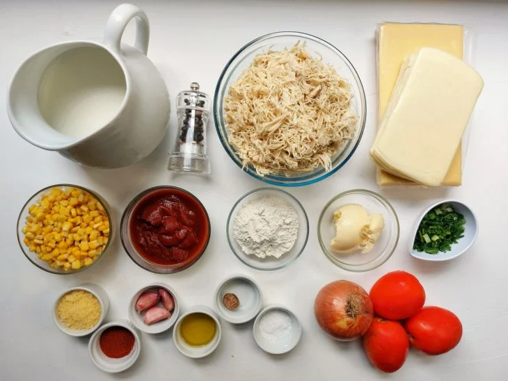
Separe os ingredientes para fazer lasanha de frango. Você pode escolher a massa de lasanha de sua preferência, como massa crua ou fresca. Aqui, utilizamos a massa fresca para que o tempo de forno seja menor;
- 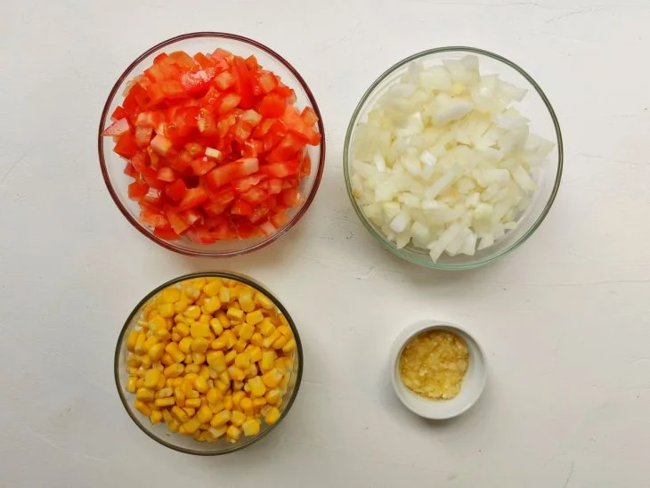
Descasque e pique a cebola e o alho em cubos pequenos. Lave, seque e corte os tomates em cubos pequenos. Com uma peneira, escorra o milho e lave em água corrente;
- 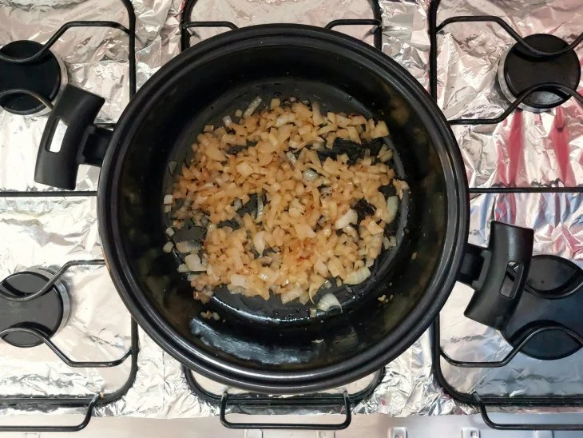
Para o recheio de frango, em uma panela grande, aqueça o óleo e frite a cebola até murchar. Adicione o alho, misture e frite até dourar levemente;

Assim que dourar, acrescente os tomates picados e tempere com páprica e pimenta-do-reino. Misture bem, coloque a tampa semiaberta e deixe refogar até os tomates murcharem, mexendo às vezes para não queimar;- 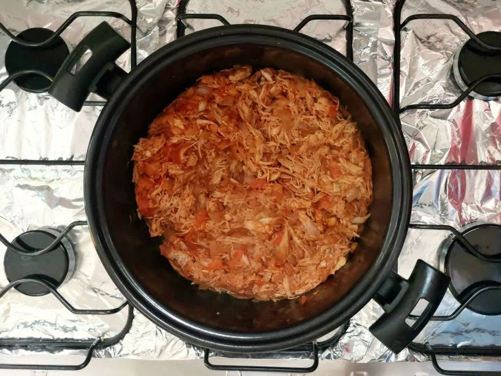
Depois, adicione o extrato de tomate e tempere com 1 colher de chá de sal. Misture e refogue por mais 1 minuto. Acrescente o frango desfiado e, com uma colher, misture bem para incorporar;
- 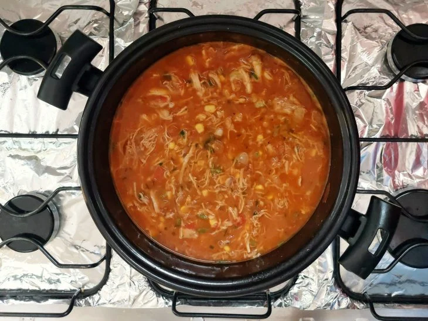
Junte a água, o milho e o cheiro-verde, mexendo para misturar. Com a panela semiaberta, cozinhe até ferver e o molho encorpar levemente - o molho para lasanha não deve ser seco, pois precisa de caldo para cozinhar a massa na hora de assar;
- 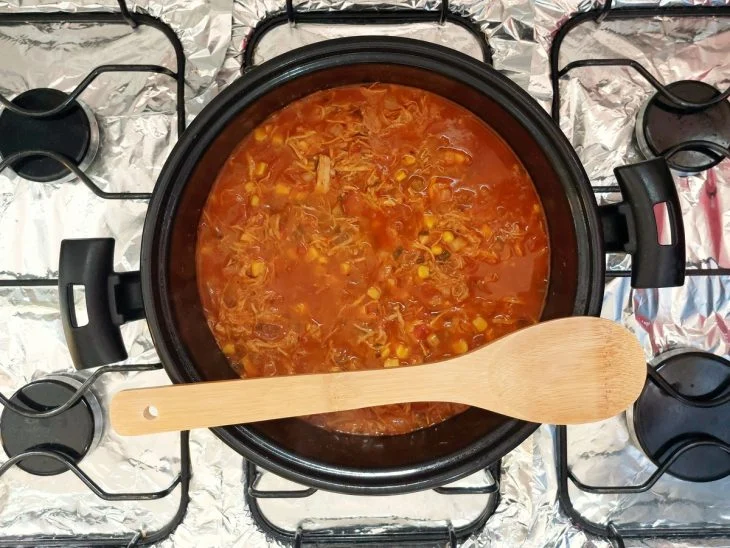
Quando o molho estiver mais encorpado, prove e, se necessário, acerte o sal e temperos. Desligue o fogo e reserve;
- 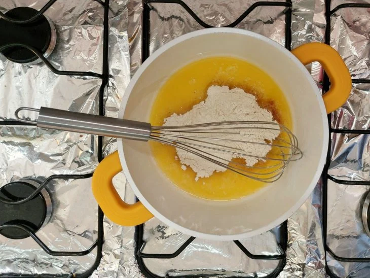
Para o molho branco, em uma panela em fogo baixo, derreta a manteiga e adicione a farinha de trigo. Com um batedor de arame ou espátula, mexa para incorporar. Cozinhe a farinha muito bem, por cerca de 4 minutos, mexendo sempre - cuidado para não queimar;
- 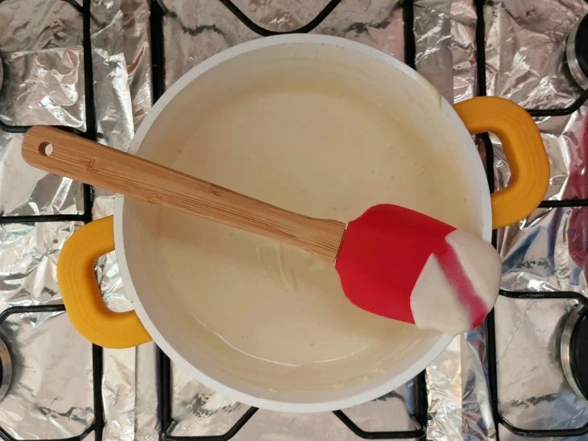
Assim que a farinha estiver cozida, aos poucos, adicione o leite e mexa rapidamente e sem parar para não formar grumos. Tempere com noz-moscada e sal. Continue mexendo até o molho encorpar e chegar em ponto napê, ou seja, cremoso e denso. Desligue o fogo;
- 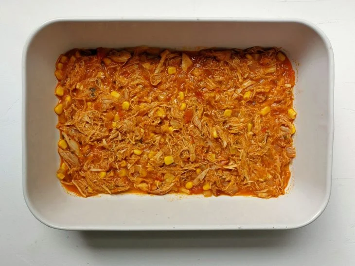
Agora, para montar a lasanha, escolha uma forma grande e alta, com cerca de 40 cm x 28 cm x 06 cm de diâmetro. Faça uma camada de recheio de frango, espalhando bem pelo fundo da forma - essa camada é importante para cozinhar a massa e não queimar a lasanha;
- 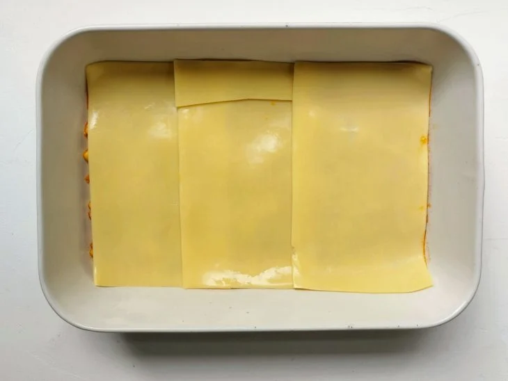
Em seguida, adicione uma camada de massa de lasanha, cobrindo toda a superfície - se necessário, corte as massas para encaixar corretamente na forma;
- 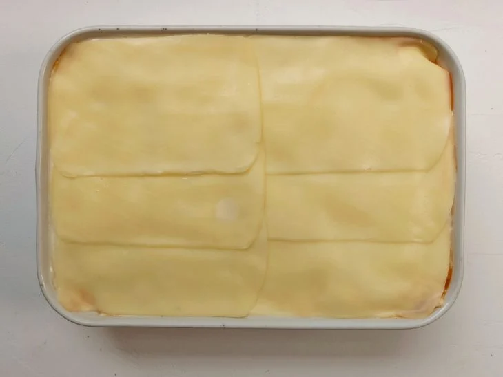
Faça uma camada com o molho branco e, por cima, uma camada de mussarela. Repita as camadas de recheio de frango, massa, recheio de frango, massa, molho branco e mussarela, nessa ordem, até acabar os ingredientes. Finalize com molho branco e mussarela por cima;
- 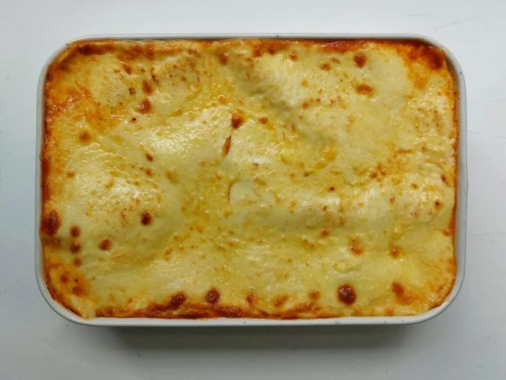
Salpique parmesão ralado por cima e leve ao forno preaquecido a 180ºC por cerca de 20 minutos, ou até o queijo gratinar. Se você estiver utilizando massa crua, o tempo de forno será de cerca de 40 a 45 minutos;

Retire do forno e sirva quente. A família toda vai amar essa lasanha de frango supersaborosa!